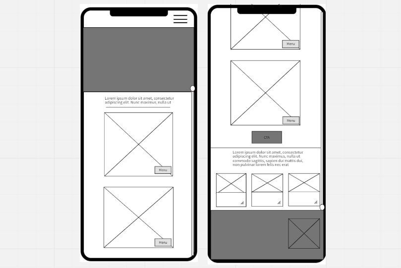
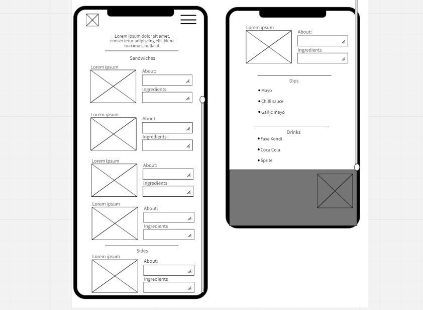

Kulià is a new Argentine food truck funded by four friends. The
foodtruck does not have a website - it is promoted only on social
media platforms. Kulia is therefore not able to organize its content
according to its goal and to display information more thoroughly. As
the foodtruck is located in Nørresundby, outside of the city center,
it may be difficult for potential cusotmers to learn about this new
project.
Solution
A responsive website providing a comprehensive overview of the
dishes served at Kulia foodtruck as well as showing it atmosphere
and vibe.
User categorization is created based on the standard data, to better
identify the audience.
The targeted audience are people living in Northern Jutland, Denmark,
but also tourists spending their vacation in this area. Mainly in the
age between mid-twenties to mid-forties. The targeted audience falls
into specific people categories, such as outgoing people who are
curious, who are willing to try something new, who are open to enjoy
an alternative experience and the related environment, or simply
people who have an interest in fast food due to limited time. Regarding
the media usage, the targeted audience has access to smart devices
which can navigate through social media and internet in general.
Interview guide
Qualitative interviews are conducted to gather people’s opinion about
the food trucks and to know their experience with this concept. Also,
to gather insights about Argentina and its cuisine. The interview
guide consists of two following research questions, based on the
client brief and brainstorming:
Food truck experience Opinions about Street food and foreign cuisine
Having the interviews ready, each team member make coding and
thematizing of the interview to find common patterns.
Empathy maps
Next step is to create an empathy map, one for each interview. The
gathered data is sorted into four categories – what the user says,
thinks, does, and feels. They are filled with quotes and concepts that
best reflect users’ insights. The data that is most suitable for the
project is placed there. That kind of visualization help to analyze
the findings.
As the project is created with a mobile-first approach, I will show
case designs based on the mobile version.
Sketches
The goal of creating sketches is to give the main impression about
what is this website is dealing with, what is their concept, and its
message. Introduce the food truck's uniqueness to the potential
visitors.
Wireframes
Wireframes are created to structure the ideas. The landing page
contains the header, menu teaser and event section. This is where
design patterns are implemented. For instance, card design pattern is
used to show the menu items, hamburger menu is used for the navigation
and fat footer design for the footer section. On the menu page, all menu
items are shown, as well as ingredients and short description about a
specific dish.


Mockups
Based on the wireframes more detailed version prototypes can be
produced. All the iterations are preceded by a user feedback, in order
to implement their insights. As the colors were already given by the
client, the main goal at that stage is to create a clear hierarchy and
to visualize the atmosphere of the place.
Concerning the home page, the above the fold content should give the
user the idea of what the website is about and also reveal some
information about the place itself. The palm and food truck svgs give
the place has a loose, friendly vibe. To interact with the website, arrow
and catchy slogans are added to interest the users.
The received feedback suggest that the design is too crowded and
overwhelming, therefore in the next iteration we give some whitespace
and prolong the introduction - thanks to that, the design looks more
clean and the content is more readable. We decide also to limit the
number of colors.
The last feedback before the final iteration shows that the colors are
not the best match for the website - a dark brown colors reminds more
of a coffee shop than food truck. Also, the contrast between the brown
header and white section is too much.
In the final version color are more toned down, illustration is
simplified and shapes less abstract.
Through the iterations of the menu page, the goal is to display the
items in most attractive way and ecourage the customers to try them.
To make the design more playful and fun, svg images are created. We
have however some problems with diving the items from one another and
creating a clear visual hierarchy. Eventually we decide to use a card
design pattern and add some background color to every menu item, which
makes the information more structured.
Wordpress and structured data
Structured data is used in the project to help to dynamically display
content on the page, such as menu, opening hours and events. Through
this solution, we want to achieve freedom for the client to have
control over the content by themselves, and be able to update it when
needed. For instance, to add new menu items or upload the events they
plan to participate in. All data are fetched through WordPress, where
it is structured based on our needs for the website.
Events
As the Foodtruck team take part in a lot of events, it is important to
notify customers about upcoming events. For this reason, advance
custom field is created in Wordpress.
Group for events consists of six field - image, name of a event, a
date, opening time of the food truck, location and description. This
group is set for post taxonomy – “kulia-event”. That means whenever
the client wants to inform the user about the new event, they need to
create a new post and check mark “kulia-event”, then fill out all the
needed information.
Advanced custom field groups for the menu items and opening hours are
created following this example. Then the data is tested in WordPress.
Mobile first approach and responsiveness
The realization starts by creating a mark-up in CSS and HTML. In the
early stage, there are three CSS files. General - for similar
properties, mobile and desktop. In JavaScript, we create a function
responsible for rendering the right CSS file, depending on the actual
screen size. This solution has however many flaws and it cannot be the
final one. The files are eventually merged, and the code is revisited
and simplified. The responsiveness is obtained with a help of media
queries and relative units such as view width and view height. Also,
with the help of flex and grid.
JavaScript and fetching data
One of the main goals of the project is to display dynamic content on
the frontend. To handle this task, multiple JavaScript are created for
the designated parts. Main.js file is responsible for covering the
overlapping functions and event listeners: creating the navigation,
rendering the map, opening hours, and the main function that calls the
structured data.
Index.js file is responsible for the elements on the home page: truck
animation and rendering the event cards. From all the events, only the
upcoming ones are sorted out And shown on the website in an ascending
order.
DrawEventsCard function is created, where we are looping through the
events and create a markup for each of them. The function takes two
parameters - as the first one, we pass only the ascending events, and
as the second one, the number of card, which can be one or two,
depending how many upcoming events we have.
In the menu.js, a function initMenu is created to determine what posts
have to be fetched. Then, for different elements of the menu
(sandwiches, drinks, others) a designated markup is created.